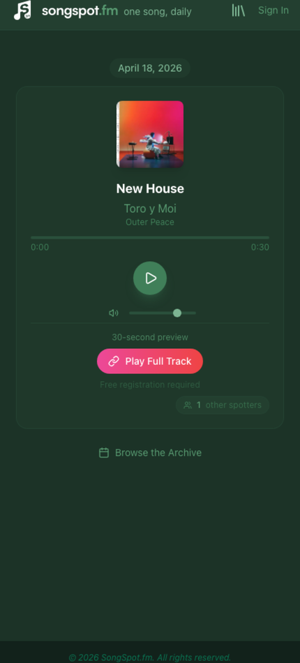
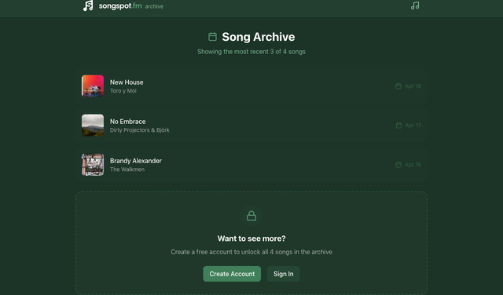
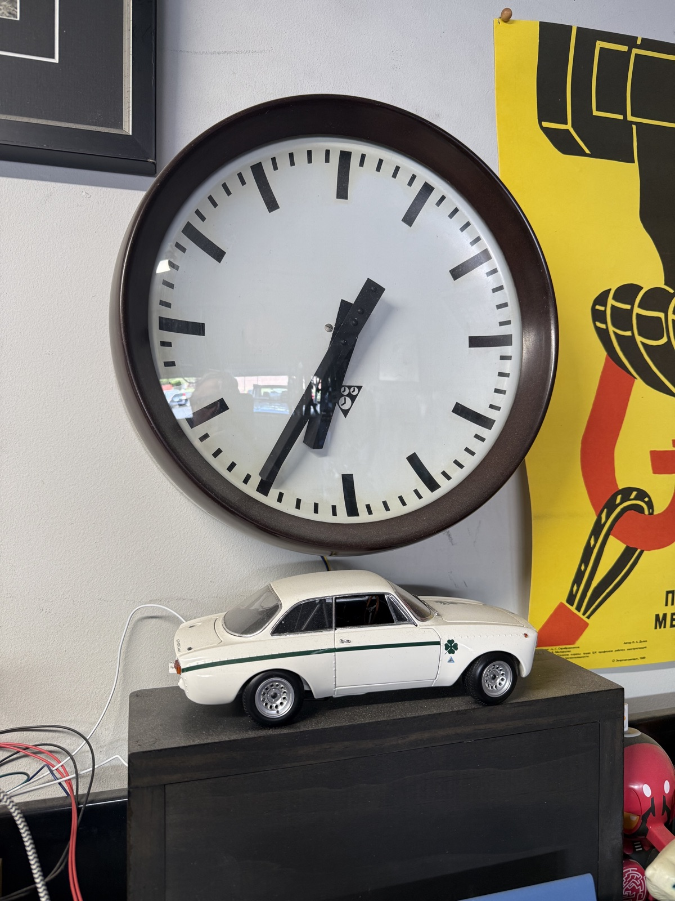
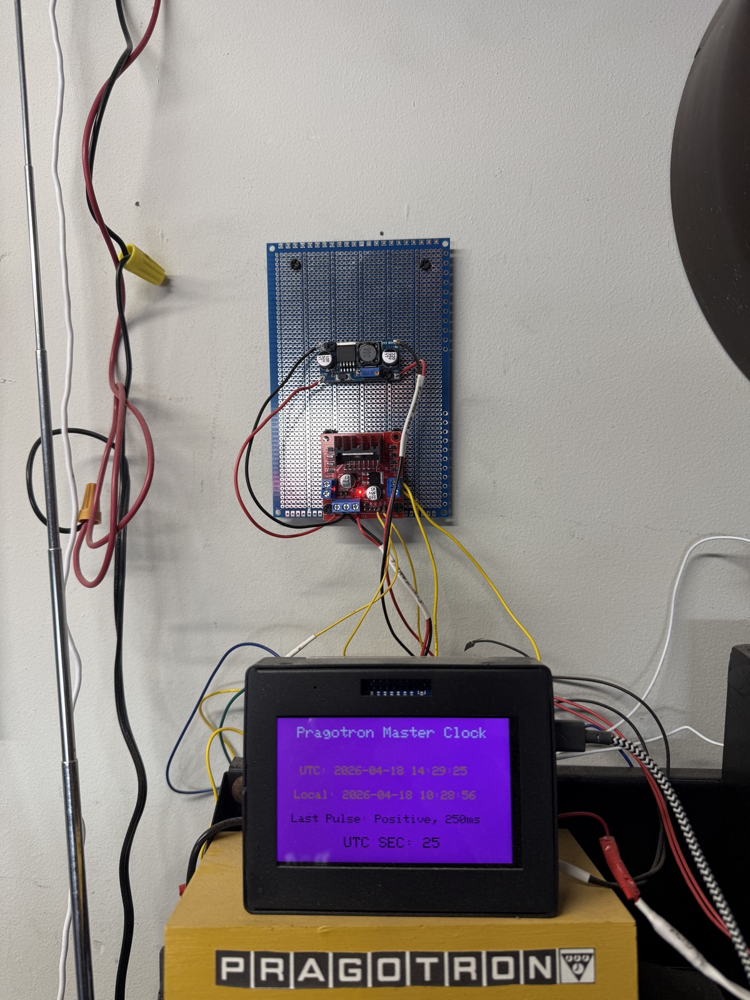
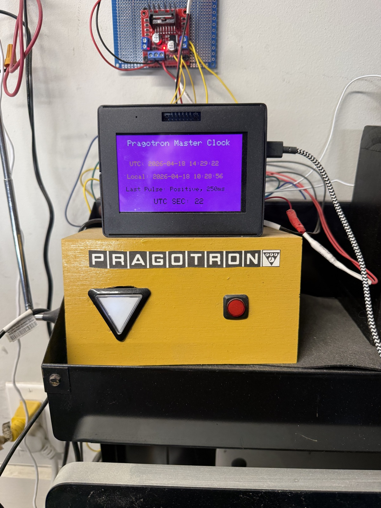
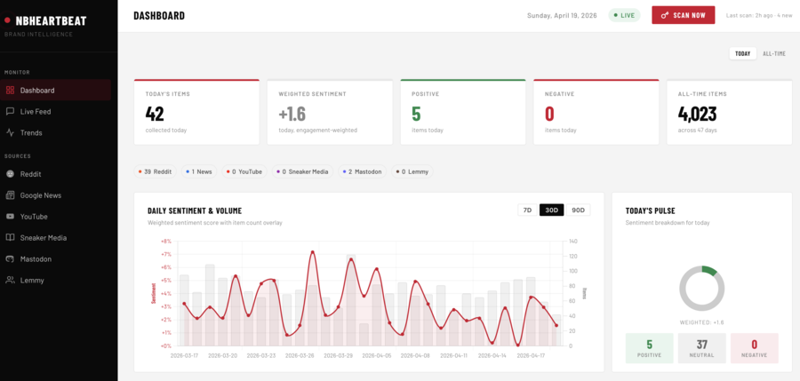

Experimental projects and creative ideas. Each project is isolated in its own section for focused development and testing.
| Project | Description | Link |
|---|---|---|
| Song of the Day | Daily music discovery platform — one curated song per day | View Project |
| Pragotron Master Clock | Arduino-driven master clock for a vintage Czech slave clock | View Project |
| D365 ER Governance Tool | Audit and cleanup of Electronic Reporting configurations in D365 F&O | View Project |
| D365 Environment Manager | Unified Power Platform + LCS environment browser with drift detection and remediation | View Project |
| NBHeartBeat | Real-time brand intelligence and sentiment analysis platform | View Project |
| Cloud Trim | Custom Azure cost optimization UI — aggregates thousands of resources with actionable savings data | View Project |
Song of the Day is a daily music discovery platform that surfaces one curated song per day. Live at songspot.fm, visitors get album artwork, a short editorial description, and a 30-second preview via the iTunes Search API. Registered users unlock the full archive; those with Apple Music subscriptions can connect their accounts for full-track playback directly in the browser.


Song of the Day was built almost entirely through conversation with Claude Code (Anthropic’s CLI agent, powered by Claude Sonnet 4). From initial scaffolding through production deployment, every component — database schema, API routes, authentication, MusicKit integration, admin tooling — was authored, debugged, and iterated on within Claude Code sessions. The project serves as a real-world proof-of-concept for AI-assisted application development at production quality.
That said, Claude Code is a tool, not a substitute for engineering judgement. The human in the loop drove every meaningful decision: choosing SQLite over a managed database for deployment simplicity, separating admin and user auth domains to limit blast radius, splitting the power stage from logic in the MusicKit provider to avoid state leaks, and pushing back when the AI suggested over-engineered abstractions where straightforward code would do. UX choices — the 30-second preview as the default experience, the progressive disclosure from anonymous visitor to registered user to Apple Music subscriber — came from understanding how people actually discover music, not from a prompt. AI-assisted development at this level requires a solid technical foundation to direct the conversation, evaluate trade-offs, and recognise when the tool is confidently wrong.
The application is a server-rendered Next.js 14 App Router project
with a clear separation between server and client components. Pages
follow a consistent pattern: a server-side page.tsx handles
auth checks and data fetching, then renders a page-client.tsx
client component for interactivity.
The system is organised into five layers:
admin_users,
users (with lockout tracking and Apple Music connection
state), and tracks (scheduled songs with Apple Music
metadata). The database auto-initializes its schema on first
import./api/auth (user login/register/logout),
/api/admin (track CRUD and scheduling),
/api/tracks (public today/archive),
/api/apple-music/search (iTunes proxy), and
/api/musickit/token (JWT generation for MusicKit
playback).jose
library.| Framework | Next.js 14 (App Router) / React 19 |
| Language | TypeScript |
| Database | SQLite (better-sqlite3, WAL mode) |
| Styling | Tailwind CSS — dark emerald theme |
| Auth | iron-session (encrypted cookies) + bcryptjs |
| Music | iTunes Search API + Apple MusicKit JS SDK v3 |
| Hosting | Railway (nixpacks builder) |
| Storage | Railway persistent volume (SQLite at /data) |
| AI tooling | Claude Code (Claude Sonnet 4) |
The site deploys directly from GitHub to Railway via automatic
deploys. Every push to main on the
scottheydorn/songspot-fm repository triggers a nixpacks
build, runs npm run build, and deploys the production
Next.js server. Railway provides a persistent volume mounted at
/data where the SQLite database lives, surviving
redeploys without data loss. The custom domain
songspot.fm is configured at the Railway service level
with automatic TLS.
Production security controls include comprehensive HTTP headers (Content-Security-Policy, HSTS, X-Frame-Options), encrypted session cookies, account lockout with brute-force protection, bcrypt password hashing, and CSRF safeguards. The admin panel is fully isolated from the public-facing user authentication domain.
← Back to ProjectsThe Pragotron Master Clock is a custom Arduino-based controller that drives a vintage Czechoslovak Pragotron slave clock movement. Built entirely from scratch — no third-party clock libraries — it generates the alternating ±24 V pulses required to advance the minute hand, displays the current time on a small TFT, and keeps itself running indefinitely via a hardware watchdog.

Pragotron slave clocks, manufactured in Czechoslovakia from the 1950s through the 1990s, were installed in thousands of schools, factories, and train stations across the Eastern Bloc. The units have no internal timekeeping — each one expects a central "master clock" to send a 24 volt pulse once per minute, alternating polarity on every pulse. A positive pulse advances the hand one minute; the next pulse must be negative to advance it again. Without the polarity swap the mechanism simply will not step. The goal of this project was to replace the long-gone original master clock with a small, reliable, modern controller that is accurate to the second and self-recovers from any fault.
The controller is split between two physical units: a wooden enclosure housing the Arduino, the TFT display, and the user controls, and an externally mounted perfboard carrying the power-stage electronics. Keeping the 24 V switching hardware away from the low-voltage logic reduces EMI coupling into the microcontroller.
Functionally the system is organised into four layers:
minuteOfEpoch counter so pulse
polarity can always be recomputed deterministically (odd/even =
±).PIN_A,
PIN_B) select direction; both-low is the idle state.
Upstream of the H-bridge, a DC-DC buck converter provides clean,
adjustable voltage for the coil drive.
The heart of the project is a short routine that emits a single polarity-correct pulse. The H-bridge is driven in one direction for the coil energisation window, then returned to an idle state so the coil is not left powered:
const uint16_t PULSE_MS = 250; // Coil energisation time
void emitPulse(bool positive) {
if (positive) {
digitalWrite(PIN_A, HIGH);
digitalWrite(PIN_B, LOW);
} else {
digitalWrite(PIN_A, LOW);
digitalWrite(PIN_B, HIGH);
}
delay(PULSE_MS);
digitalWrite(PIN_A, LOW);
digitalWrite(PIN_B, LOW); // return H-bridge to idle
}Pulse polarity is derived from the absolute minute counter, not a toggling boolean — this way a watchdog reset or power glitch can never leave the controller and the slave clock out of phase:
void tickMinute(uint32_t minuteOfEpoch) {
bool positive = (minuteOfEpoch & 1) == 0;
emitPulse(positive);
}Early bench testing revealed the Arduino would occasionally freeze, most likely from EMI generated by the 24 V switching coupling back into the logic rail. The fix was two-fold: improved decoupling near the MCU (and physical separation of the power stage onto its own perfboard), plus the AVR watchdog timer configured to force a reboot if the main loop ever stops making progress:
#include <avr/wdt.h>
void setup() {
// ... hardware init: RTC, H-bridge pins, TFT ...
wdt_enable(WDTO_8S); // 8-second hardware timeout
}
void loop() {
if (minuteRollover()) {
tickMinute(currentMinute());
}
updateDisplay();
wdt_reset(); // "I am still alive"
}If loop() ever stops executing — stack overflow,
I²C bus hang, glitched interrupt — wdt_reset()
stops being called, the watchdog fires, and the chip reboots. On reboot,
the RTC is re-read and the next pulse polarity is derived from the
absolute minute counter, so the slave clock stays in sync with zero
manual intervention.
The master clock lives in a small hand-built wooden enclosure labelled with the Pragotron logo. A TFT panel on top shows, at a glance: UTC and local time to the second, the polarity and duration of the last pulse sent, and a rolling UTC seconds counter. Two front-panel controls — an illuminated indicator button and a momentary push button — handle manual advance and reset, which is useful after a long power outage when the slave clock hands need to be re-aligned with real time.

The D365 ER Governance Tool is an audit and cleanup utility for Electronic Reporting (ER) configurations in Microsoft Dynamics 365 Finance & Operations. Developed for a large retail client operating across multiple regions, it addresses a persistent governance challenge: D365 environments accumulate hundreds of ER configurations over time — many country-specific, deprecated, or entirely unused — with no built-in tooling to identify which can be safely removed.
Electronic Reporting is the D365 framework for generating regulatory documents: tax filings, payment formats, invoices, Intrastat declarations, and similar country-specific output. Microsoft ships hundreds of ER configurations through the Global Repository, and environments that have been live for any length of time tend to accumulate a sprawling catalogue of formats, data models, and model mappings. Many target countries the organisation does not operate in. Others are older versions superseded by newer releases. Some have never been executed at all.
The cost is not just clutter. Excess ER configurations slow down the Globalization Studio sync process, inflate Dataverse storage, and create confusion for functional consultants trying to identify which formats are actually in use. D365 provides no native view that cross-references configurations against execution history, parameter bindings, or legal entity geography — so cleanup has historically been a manual, error-prone process that most teams simply avoid.
The tool is a Python application with a Streamlit web interface that queries two separate API surfaces and correlates their data to classify every ER configuration in the environment:
msdyn_electronicreportingconfigurationsindexfiles
table and parses them into a flat catalogue of all configurations,
including name, version, status, provider, country target, and
GUID. It also discovers and scans additional Dataverse tables
(format destinations, solution metadata) for active usage
signals.Authentication supports three methods: Azure CLI tokens (for developer use), interactive browser sign-in via MSAL, and service principal credentials for automated/pipeline scenarios.
The analyser classifies every configuration into one of four categories:
Dependency analysis walks the parent–child tree so that a data model is never flagged for removal if any of its child model mappings or formats are classified as required.
The Streamlit UI is organised into four tabs:
| Language | Python |
| UI | Streamlit |
| Charting | Plotly Express |
| Auth | MSAL (Azure CLI, interactive, SPN) |
| Data sources | Dataverse Web API + D365 F&O OData |
| Data processing | pandas + NumPy |
| AI tooling | Claude Code (Claude Sonnet 4) |
The D365 Environment Manager is a lightweight desktop tool that consolidates environment data from Microsoft’s Power Platform Admin API and Lifecycle Services (LCS) into a single-page interface. Developed for a large retail client managing dozens of D365 Finance & Operations environments across NA, EMEA, and APAC regions, it provides an at-a-glance snapshot of commonly referenced environment variables — build versions, platform updates, ER solution versions, deployment history, freeze status, and ownership — that are otherwise scattered across multiple portals and API surfaces.
Managing a portfolio of D365 F&O environments means constantly cross-referencing data from at least three separate sources: the Power Platform Admin Center for environment metadata and state, LCS for build versions and deployment history, and Dataverse for Globalization Studio configuration versions. None of these surfaces present a unified view. Determining whether an environment is running the expected application build, whether its ER solution is current, or who owns a particular sandbox requires navigating multiple portals, waiting for slow page loads, and mentally correlating data across tabs.
This fragmentation creates a deeper operational risk: configuration drift. When environments are maintained independently — different teams deploying packages at different cadences, sandbox refreshes overwriting metadata, ad-hoc changes to ER configurations — it becomes difficult to know whether any given environment is in its expected state. Undetected drift leads to failed deployments, broken integrations, and wasted troubleshooting time when the root cause is simply that an environment is running a different build or configuration than assumed.
The tool is a Python/FastAPI application with a vanilla JavaScript single-page frontend. It authenticates via Azure CLI tokens and queries three API surfaces in a progressive enrichment pattern:
This three-phase approach means the UI is usable within seconds of launch — basic environment data appears immediately, with build and version details progressively filling in as the slower API calls complete.
Beyond inventory, the tool is designed as the foundation for active environment governance. By aggregating environment state into a single data model, it enables drift detection: comparing the current state of each environment against an expected baseline and surfacing discrepancies. Planned capabilities include:
The objective is a closed-loop system: detect drift, notify the right people, and where safe to do so, trigger the appropriate corrective action automatically — keeping the full portfolio of D365 environments in a known, validated state.
The UI is a dark-themed single-page application built with vanilla JavaScript. Environments are displayed in a sortable table with columns for name, SKU, state, purpose, tier, region, owner, ER solution version, application build, platform version, and freeze status. Clicking a row expands an inline editing panel with visual diff highlighting — changed fields are marked with yellow borders before save. Concurrent multi-environment updates, toast notifications, and a full audit trail panel round out the interface.
Additional features include field inference (automatically suggesting purpose, tier, and region from environment naming conventions), JSON export for offline analysis, and one-click Confluence publishing to generate a timestamped environment inventory page for stakeholder review.
| Backend | Python / FastAPI + Uvicorn |
| Frontend | Vanilla JavaScript (single HTML file) |
| Auth | Azure CLI token acquisition (MSAL fallback) |
| Data sources | Power Platform BAP API + LCS API + Dataverse Web API |
| Storage | SQLite (audit log, config cache) |
| Publishing | Confluence Cloud REST API |
| AI tooling | Claude Code (Claude Opus 4) |
NBHeartBeat is a real-time brand intelligence and sentiment analysis platform built for a major athletic footwear company. It continuously monitors mentions across social media, news outlets, sneaker culture publications, video channels, and review platforms — aggregating content from over a dozen sources into a single dashboard with live sentiment scoring, engagement-weighted trends, and quality complaint detection.

Brand perception in the sneaker industry moves fast. A single viral post about a quality defect, a surprise collaboration announcement, or a trending colourway can shift sentiment overnight. Traditional brand monitoring tools are expensive, slow to configure, and poorly calibrated for sneaker culture — where words like “crazy,” “sick,” “insane,” and “fire” are enthusiastic praise, not negative commentary. Off-the-shelf sentiment libraries (AFINN, VADER) consistently misclassify this language, producing misleading trend data that erodes confidence in the analysis.
The objective was to build a lightweight, self-hosted platform that could be tuned precisely for the brand’s domain — sneaker culture, running communities, streetwear media — and provide an honest, calibrated signal rather than a noisy one.
The application is a Node.js/Express server with a SQLite database and a single-page dashboard frontend. Scans run on a cron schedule (three times daily) or on demand, with each scan cycling through all configured sources, filtering for brand relevance, scoring sentiment, and storing results for trend analysis.
The system is organised into four layers:
The heart of the platform is a sentiment scoring engine that can be tuned at three levels: lexicon overrides, pattern detectors, and source weighting.
The base AFINN-165 dictionary assigns scores to ~3,700 common English words, but many of those scores are wrong for sneaker culture. The engine maintains a custom lexicon of ~60 terms that override the AFINN defaults:
The lexicon is designed to be hot-swappable — new terms can be added or existing scores adjusted without modifying the core analysis logic, allowing the engine to be recalibrated as language evolves.
Standard word-list sentiment analysis has a critical blind spot: negation. “Not comfortable” contains the positive word “comfortable” and scores positively unless the negation is explicitly detected. The engine includes a pattern-based quality complaint detector that catches four failure modes:
A penalty cap of -12 prevents runaway stacking in long complaint posts, ensuring that even a detailed quality rant produces a proportionate negative score rather than an extreme outlier.
Daily sentiment aggregates use engagement-weighted scoring rather than simple averaging. Each item’s contribution to the daily aggregate is weighted by its engagement signal:
weight = max(1, upvotes + (comments × 2))
This means a Reddit post with 500 upvotes and 80 comments influences the daily sentiment score far more than a news article with no measurable engagement. The minimum weight of 1 ensures every item contributes, but high-engagement content — which better represents actual community sentiment — dominates the signal. Sources without native engagement metrics (RSS feeds, news articles) default to a weight of 1, while social platforms with upvote and comment counts naturally receive higher weighting. This approach allows the engine to be tuned by adjusting the engagement multiplier, adding per-source weight coefficients, or introducing source-level credibility scores — without changing the underlying sentiment scoring logic.
Title text is analysed with double weight (duplicated in the combined analysis text), reflecting the outsized influence of headlines and post titles on both engagement and reader perception.
| Runtime | Node.js 18+ (with built-in SQLite) |
| Server | Express.js |
| Database | SQLite 3 (WAL mode) |
| Sentiment | AFINN-165 + custom sneaker-culture lexicon (~60 overrides) |
| Scheduling | node-cron (3× daily + on-demand) |
| Sources | Reddit, Google News, Sneaker Media RSS, YouTube, Mastodon, Lemmy, Bluesky, Trustpilot, Discord |
| Dashboard | Chart.js + vanilla JavaScript |
| AI tooling | Claude Code (Claude Opus 4) |
Cloud Trim is a custom web application that aggregates cost data, resource inventory, utilization metrics, and optimization recommendations for thousands of Azure resources across an organization’s subscriptions into a single operational dashboard. Built for a large retail company managing cloud infrastructure across multiple regions, it pulls data from Microsoft’s native Azure APIs, runs it through a Cloud Custodian policy engine to identify waste and enforce tagging governance, and surfaces actionable savings data that translates raw cloud telemetry into clear business decisions.
Azure provides powerful cost management and optimization tools — Cost Management, Advisor, Resource Graph, Monitor — but they exist as separate portals, each with its own query language, export format, and access model. For an enterprise running dozens of subscriptions with thousands of resources, answering basic questions (“What are we spending by cost center?” “Which VMs are idle?” “Are all resources tagged correctly?”) requires navigating multiple surfaces and manually correlating data that was never designed to be viewed together.
The deeper challenge is accountability. Without normalized tagging and automated cost allocation, there is no reliable way to charge infrastructure costs back to the business units that incur them. Untagged resources become invisible spend. Idle VMs and orphaned disks accumulate because no one has a consolidated view of what is running, what it costs, and whether it is still needed. Azure Advisor identifies savings opportunities, but its recommendations are scattered across subscriptions and lack the resource-level detail needed to act on them confidently.
The application is designed to deliver measurable business outcomes, not just technical visibility:
The application is built on Python/FastAPI with a server-rendered UI, a PostgreSQL data store, and a CLI for both interactive use and scheduled pipeline execution. Data flows through four ingestion pipelines that run independently and can be triggered on demand or via scheduled jobs:
cost_center).All four pipelines write to a shared PostgreSQL database with a materialized view that joins costs to normalized tags, enabling instant cost allocation queries across five dimensions without expensive runtime joins.
The application extends Cloud Custodian — the open-source cloud governance framework — with a custom plugin that adds cost-aware and utilization-aware filters not available in the base project. This is the key differentiator: standard Cloud Custodian can find idle VMs, but it cannot distinguish a $5/month idle dev box from a $2,000/month idle production instance. The custom filters cross-reference live Azure Monitor metrics and actual Cost Management spend data against each resource, enabling policies like “flag VMs with average CPU below 5% over 14 days that cost more than $500/month” — targeting high-value waste rather than generating noise.
Nineteen starter policies ship with the application, covering idle and oversized VMs, unattached disks, orphaned network resources, unused storage accounts, empty App Service plans, expired snapshots, and security findings (open firewalls, public storage access, expiring Key Vault keys). Each policy runs in read-only mode — no automatic modifications — and records findings with severity, affected resource, current cost, and estimated savings percentage. Findings are surfaced in the UI for human review before any action is taken.
The UI is a server-rendered web application using HTMX for lightweight interactivity without a JavaScript build step. Pages are organized around the cost optimization workflow:
| Backend | Python / FastAPI + Uvicorn (fully async) |
| Frontend | Jinja2 server-rendered templates + HTMX |
| Database | PostgreSQL 16 (SQLAlchemy 2.0 async + Alembic) |
| Policy engine | Cloud Custodian + custom plugin (cost-aware filters) |
| Azure APIs | Cost Management, Resource Graph, Monitor, Advisor |
| Data processing | pandas + PyArrow (Parquet/CSV) |
| Auth | Azure Identity (Service Principal + Azure CLI) |
| Notifications | Microsoft Graph API (email) + Teams webhooks |
| Infrastructure | Azure Container Apps + PostgreSQL Flexible Server (Bicep IaC) |
| AI tooling | Claude Code (Claude Opus 4) |